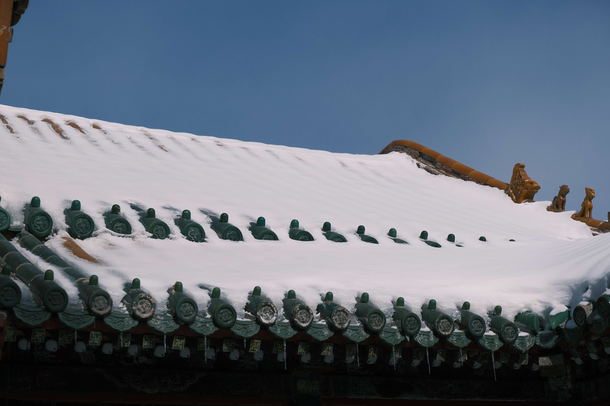
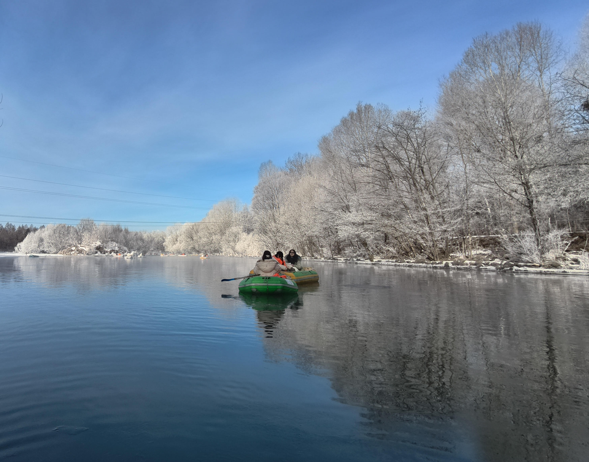
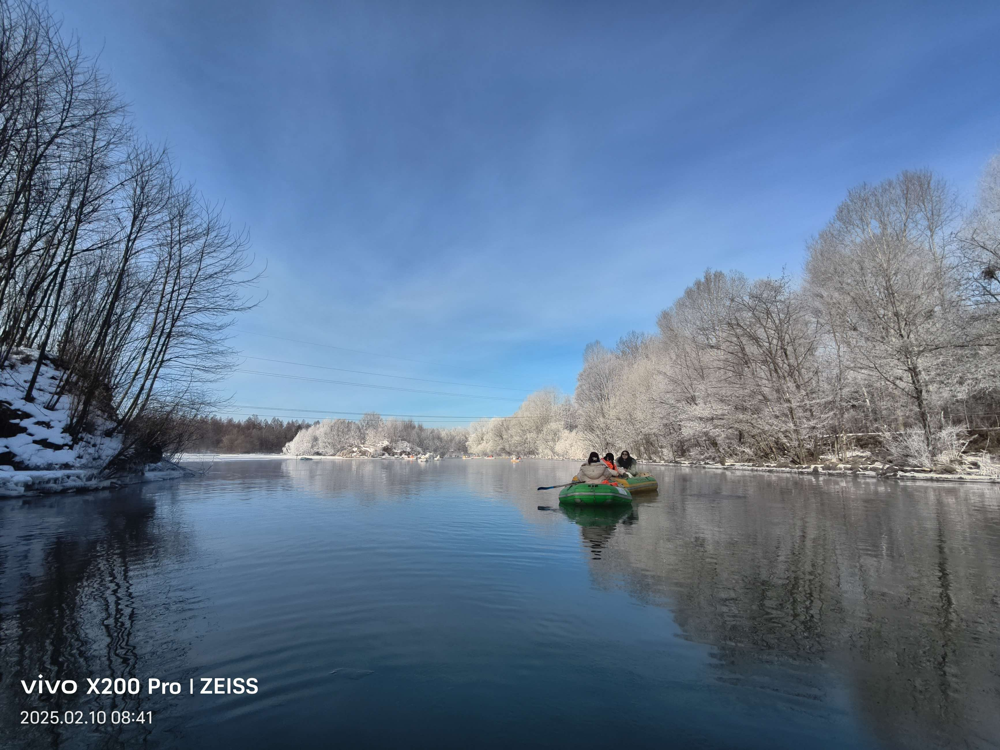
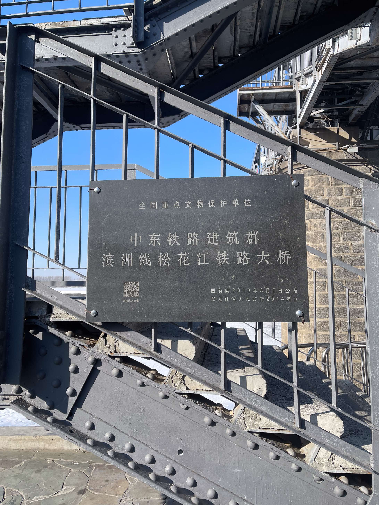
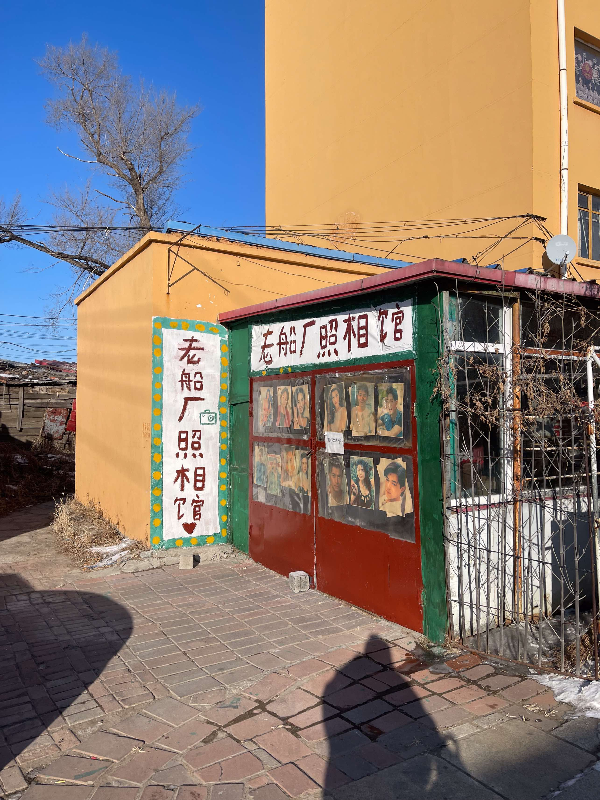

旅行
东北行记
前言
初到沈阳：雪白和欢庆的世界
第一次意识到自己已经来到了北方，是在飞机上。当我摘下耳机，刚从一场精彩的电影世界里走出来，抬头望向窗外时，我才意识到，曾几何时外面的景色已变成白茫茫的一片。
下飞机时，被空姐好心地提醒，外面此时的地表温度为零下负十，注意多添加些衣物。当我们经过辗转反侧，终于来到沈阳的中街时，我终于体会到了北方的冷。这里的冷是物理攻击，对那些没有穿戴防具的部位伤害最为严重。
当然，其中区别最大的，自然是雪。就像南方经常下的雨，北方对应的则是雪。这里的一切都带上雪的装饰。

早起去雾凇漂流
早上好歹也起了早，想在下午离开前，最后一睹长白山景区的风景。整理好行李，搭上昨天相同司机的专车，我们前去了上午的目的地：雾凇漂流。
检完票，我们三人同乘于一条艇上，眼前是向下倾斜的水道，两边是林立的松树，其树枝向中央倾斜，成拱门状，穿梭其间，如过水帘洞般。
后来小艇游过了水道，来到开阔的湖面，我得以看见雾凇的全景。小小的雪凝结在树杈上，像是给它们画上了雪白的眉毛。湖面如镜，水中倒立着蓝天和被雪装饰的树。
事后回想起来，这儿大抵是整个旅程中最美丽的地方。


速通长白山
逛完雾凇，下一站便是长白山。去之前，自诩幸运星的我们，认为这儿的天池一定会向我们开放。可即使是晴朗的蓝天，在我们看不见的山顶上，依旧下着大雪。
我仍旧记得初次见到雪山时的震撼。果然山的恢弘气势，不是渺小之物所能够比拟的。它们高我们如此之多，那雪白的山巅离我们又是如此遥远。
身处两千多米的海拔之上，温度来到了零下负二十七，山谷里吹的风比此前任何地方都刺骨和寒冷。
北大湖滑雪：拿命下来的中级道
所谓初生牛犊不怕虎，上次在天定山的滑雪让我积累了大量的自信心，那儿的中级道我能随便滑，难道北大湖的我就不能试一下了嘛？
我第一次亲眼见到这儿的滑雪场，是在去酒店的摆渡车上：远远望去，那里是一座高山，上面四通八达的雪道与桦树交叉着。
终的，当我在雪道尽头，回头去看这段下来的旅程时，心里只剩下唯一的情绪：滑雪它好可怕。

城市漫步：行走在结冰的松花江
今天严格来说，并没有路线规划，只有随心所欲地走，走到哪里算哪里吧。
可到了白天，打开地图，我才明白原来这里不过是松花江边。而眼前的大片冰面，其实是松花江结冰后，当地设立的、冬季特有的游乐园。它也不需要门票，我跟着身旁的游客，一同进去了。
那为了过岸，我就来到了松花江大桥上。这桥远远望去就挺漂亮的，其上是湛蓝色的天空；底下是结冰的湖面，与天空澄澈的蓝色相呼应。

乡村的角落：船厂
过了桥，如果只能步行的话，那么船厂就是我必须会经过的地方。
村里几乎听不到一点声音，让我这位外来者，仿佛体会到了一丝这里被哈尔滨外面世界所抛弃的感觉。路上也见不到行人，偶尔从远处拐角出现的，也都是爷爷奶奶辈的老人们。
不知为何，每次回想起来，呆在这儿不期而遇的小村落的感受，竟是哈尔滨所有地方里精神性最好、最舒适的一次体验。

哈尔滨大剧院：初次欣赏戏剧《哈姆雷特》
这次想看一场戏剧的想法，是上次在北京和阿呆一起游玩后延续下来的。
于是，在我到哈尔滨的当天，我就点开了当地的戏剧节目，看看里面是否有无我所熟悉的。这才找到了今日的节目：《哈姆雷特》。
可观看的体验，却和阅读剧本完全不同。书里的台词，只能让人明白发生了什么，可却无法活生生地看见人物的挣扎与表情。
To be or not to be。
在明白了这点后，才能体会到为何莎翁的剧是永恒经典。